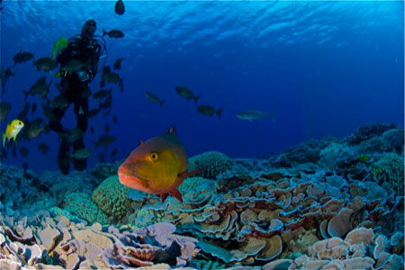
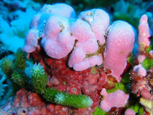
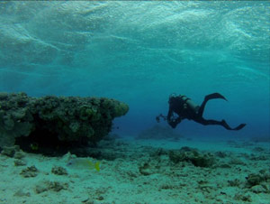
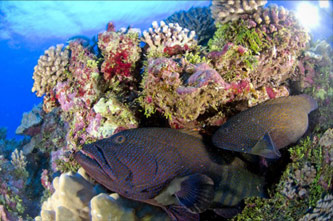
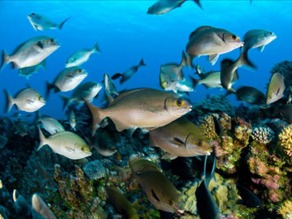
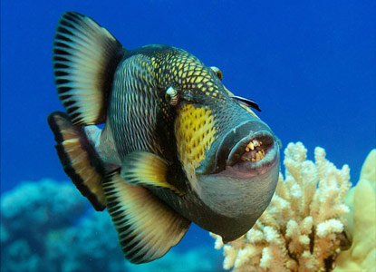
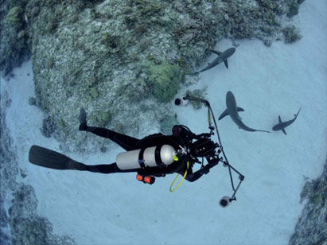
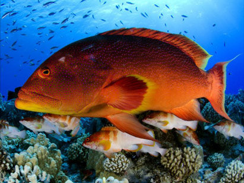
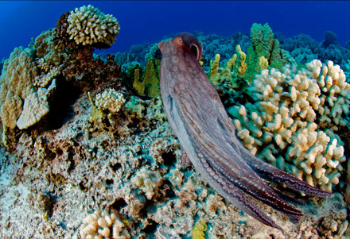
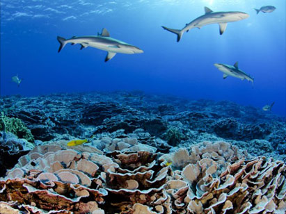

- Diving in Pitcairn Islands
- 
-
Because of their isolation, contrasting physiography and peripheral location towards the south-eastern edge of the vast Indo-Pacific region, the Pitcairn Islands are of great biogeographical interest. Since all the islands except Pitcairn have been uninhabited for hundreds of years, they provide a rare glimpse of insular marine ecosystems essentially untouched by human activities.
The scientists diving around Pitcairn reported that weather often posed a challenge, with large waves and swift currents often preventing them from diving; however, when the ocean cooperated calmly, sunshine penetrated the waters, revealing colorful reefs like none other. -
The Pitcairn archipelago is made up four islands, namely Pitcairn, Ducie, Oeno, and Henderson. Scientific surveys taken over the course of just a few weeks revealed more than 40,000 fish, 6,300 thriving coral colonies, 5,000 sea urchins, and over 14,000 algae – no matter how you look at it, that's a stunning amount of life.
-  
If you are an experienced scuba diver, local Dive trips are available. In good weather and sea conditions you will have the opportunity to dive the wrecks of the HMS Bounty and the Cornwallis and to also explore Pitcairn's deeper waters, where the waters are crystal clear and the marine life is abundant.
-
At Pitcairn Island, schooling rudderfish by the hundreds were encountered grazing along the rocky bottom; a deep coral reef no one knew about before these exploratory dives was also discovered. This huge rock that rises up out of the Pacific is washed by waves and current and the water can be murky.
- 
Pitcairn Rudderfish - 
Pitcairn triggerfish -
Henderson Island is a UNESCO world heritage site; when you view it from the water you'll marvel at the steep limestone cliffs with green forests that threaten to creep off the edges and invade the blue ocean water beneath. Below the water's surface, predatory fish including numerous curious sharks hunt from schools of smaller baitfish.
- 
Henderson Sharks -
Oeno Island is frequently subject to pounding wave action, however when the sea calms down, the rocky reefs open themselves up to exploration, revealing an abundance of predatory fish including several different types of groupers.
Nudibranchs and crustaceans are abundant here, as are other invertebrates of nearly every conceivable type. - 
Oeno Grouper - 
Oeno Octopus -
In comparison with its sister islands, Ducie Island is like a classic paradise. This splendid ring-shaped coral island is surrounded by shallow reefs covered in luxuriant hard and soft coral, sponges, and beautiful anemones, all of which are traversed by marine life small and large alike.
Brightly colored reef fish contrast splendidly with the pale blue corals that thrive here, and equally vibrant nudibranchs, crabs, and shrimps bustle about the reef in a spectacular display that is certain to set photographer's hearts aflutter.
Rays and turtles can be seen here, along with reef sharks. If you must choose just one island to explore while visiting the Pitcairn Islands, this is by far the best of the four. - 
Ducie Sharks